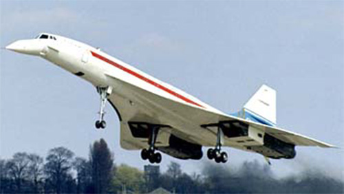

Concorde

- Разработчик: SNIAS, BAC
- Страна: International
- Первый полет: 1969
- Тип: Сверхзвуковой пассажирский самолет
Concorde («Конкорд») — это британо-французский сверхзвуковой пассажирский самолёт, один из двух типов гражданских сверхзвуковых самолётов, находившихся в коммерческой эксплуатации. Он был создан в результате слияния двух национальных программ разработки сверхзвукового пассажирского авиатранспорта, и основные разработчики самолёта — компании Sud Aviation (Франция) и BAC (Великобритания).
Concorde начал летать в 1976 году и эксплуатировался авиакомпаниями British Airways и Air France. За 27 лет регулярных и чартерных рейсов было перевезено более 3 миллионов пассажиров, а общий налёт самолётов составил 243 845 часов.
25 июля 2000 года один самолёт был потерян в катастрофе при вылете из парижского аэропорта Шарль де Голль. В результате погибло 113 человек, и эта трагедия приостановила полёты Concorde на полтора года. В 2003 году полёты прекратила Air France, а затем и British Airways из-за повышения цены на топливо.
| Летно технические характеристики | |
|---|---|
| Модификация | Concorde |
| Размах крыла, м | 25.56 |
| Длина, м | 62.10 |
| Высота, м | 12.19 |
| Площадь крыла, м2 | 358.25 |
| Масса, кг | |
| - пустого самолета | 79300 |
| - нормальная взлетная | 187700 |
| Тип двигателя | 4 ТРДФ Rolls-Royce/ SNECMA Olympus 593 Mk.621 |
| Тяга форсажная, кгс | 4 х 172600 |
| Максимальная скорость, км/ч | 2180 (М=2.02) |
| Перегоночная дальность, км | 7500 |
| Практический потолок, м | 18300 |
| Экипаж, чел | 4 |
| Полезная нагрузка: | 144 пассажира или 12700 кг груза |